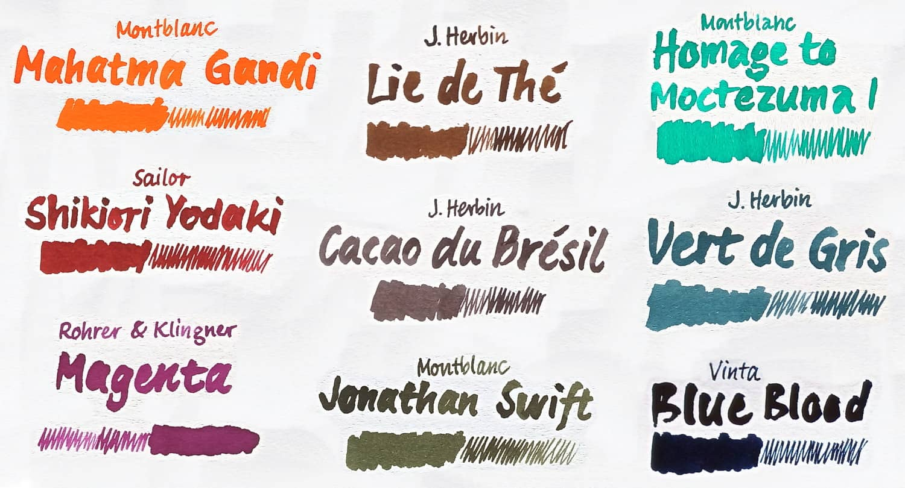
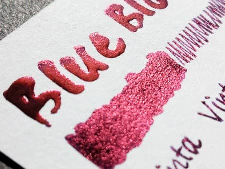

@charak
@charakFarbige Tinten fürs tägliche Schreiben
Meinen Alltagsfüller betanke ich abwechselnd mit einer von derzeit neun Tinten. Hier stelle ich meine verschiedenen Farben kurz vor.
Vor zehn Jahren habe ich einen Blogartikel über meine farbigen Tinten geschrieben – nun möchte ich das wiederholen. Noch immer nutze ich den gleichen Füller Kaweco Special, habe mir aber einen neuen Konverter gekauft.
Bis letztes Jahr hatte ich als weiteres Schreibgerät einen einfachen Rollerpen im Einsatz, so dass ich parallel immer zwei verschiedene Tinten kombinieren konnte. Seit dem Umzug nach Hohenfels habe ich nämlich ein extra Büro und der Füller lag meistens im Wohnzimmer. Jetzt wechsle ich weniger hin und her und komme wieder mit einem Schreibgerät aus.
Trotz Tinten-Einkaufsstopp besitze ich inzwischen neun statt sieben Farben 🤷. Seit zwei Jahren wechsle ich nicht mehr in einer festgelegten Reihenfolge durch, sondern gehe ein bisschen danach, worauf ich gerade Lust habe, was harmonisch zur vorangehenden Farbe passt, was ich schon länger nicht mehr verwendet habe und wovon noch das meiste da ist. Hier meine aktuelle Tintensammlung:

-
Mahatma Gandhi – Eine sehr leuchtende, safranfarbene Tinte von Montblanc. Ich habe sie im länglichen Tintenfass mit 60 ml geschenkt bekommen – entsprechend lange hält sie bei mir, ist mittlerweile meine älteste Tinte und war bereits 2016 in meiner Sammlung.
-
Shikiori Yodaki – Von dieser roten Tinte des Herstellers Sailor hat mir ein Freund letztes Jahr zwei 20 ml-Fläschchen aus Japan mitgebracht. In einer Tinten-Bewertung hat mich der goldene Glanz neugierig gemacht – man sieht ihn allerdings nur auf sehr glattem Papier, wenn die Tinte an der Oberfläche trocknet und kaum ins Papier einziehen kann.
-
Magenta – Eine unangemessen günstige Tinte von Rohrer & Klingner, die frisch geschrieben ein bisschen rötlicher erscheint, angetrocknet dann ein bisschen bläulicher.
-
Lie de Thé – Mit feiner Feder geschrieben wirkt dieser Braunton von J. Herbin etwas dunkler und ist für mich eine schöne Alternative zu klassischen blauen Tinten. Wird der Schreibstrich dicker, kommt die Tinte etwas heller rüber und wird mir persönlich ein bisschen zu gelb.
-
Cacao du Brésil – Ein weiterer Braunton von J. Herbin, allerdings deutlich grauer, von dem ich mir nur ein kleines Fläschchen (10 ml) gekauft habe. Es wird demnächst leer und obwohl ich ja eher neue Farbtöne ausprobieren möchte, könnte es sein, dass ich mir genau diese Tinte wieder nachkaufe.
-
Jonathan Swift – Das Seetanggrün von Montblanc habe ich auch bereits seit über 10 Jahren in Gebrauch, das runde 35 ml-Fässchen dürfte aber bald aufgebraucht sein. Besonders gut gefällt mir an dieser Tinte die Schattierung, also dass sie beim Schreiben hellere und dunklere Grüntöne zeigt.
-
Moctezuma I – Für diese türkisfarbene Tinte hat sich der Hersteller Montblanc die begleitende Farbbezeichnung Pierced Sky ausgedacht, was man vielleicht mit „durchstochener Himmel“ übersetzen könnte. Sehr schön finde ich, wie der Farbton zwischen grün und blau schwankt, abhängig vom Licht und dem Papier.
-
Vert de Gris – Eine gedämpfter Blauton von J. Herbin, nicht so stechend wie das weitverbreitete Königsblau. Wie bei Cacao besitze ich hiervon nur ein nur ein 10 ml-Fläschchen und versuche mir die Tinte etwas einzuteilen.

-
Blue Blood – Diese Tinte von Vinta Ink wird auf den Philippinen hergestellt und ich bin hin und her gerissen. Ausgewählt habe ich sie, weil sie einen massiven, pinkfarbenen Glanz besitzt, sie reflektiert sogar auf normalem Schreibpapier metallisch, wenn man das Geschriebene schräg ins Licht hält. Das sieht einfach sehr krass aus und ist ein beeindruckender Effekt. Es hat aber seinen Preis: Die Tinte trocknet schnell ein und fließt schlecht aus dem Füller. Ich muss die Feder oft erst in Wasser tauchen, bevor der Fluss in Gang kommt. Außerdem ist das Geschriebene sehr wasserlöslich und verschmiert sogar noch nach Tagen. Ob es das wert ist?
Das sind meine aktuellen neun Tinten. In welcher Farbe bekommt ihr am liebsten handgeschriebene Briefe? Gibt es Schreibfarben, die ihr sehr mögt oder für absolut ungeeignet haltet? Wie sind eure Erfahrungen mit besonderen Effekt-Tinten?